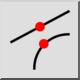
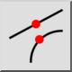
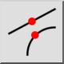
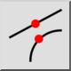

Middle
Toolbar / Icon:
 

Menu: Snap > Middle
Shortcut: S, M
Commands: snapmiddle | sm
Toolbar / Icon:
 

Menu: Snap > Middle
Shortcut: S, M
Commands: snapmiddle | sm
Snaps to middle points of lines and arcs and to point entities. Note that the middle of an arc is at the middle of the arc line on the arc, not at its center.